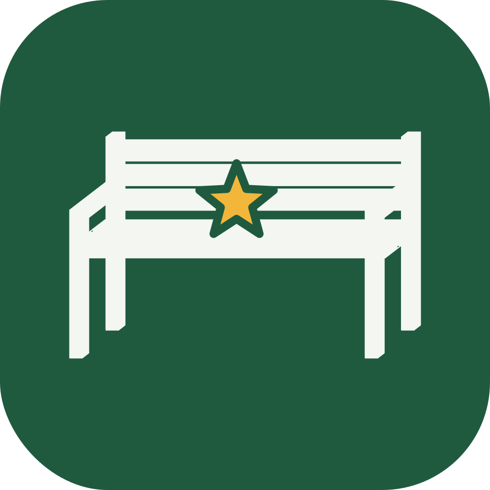

BenchieRate a bench.
Someone has to.
The benches of the world, from OpenStreetMap, plus the ones it missed, added by you. Sit on one, check in, give it a score for comfort, view and build. Earn badges. Find the best bench near you. Take this more seriously than it deserves.
Bench of the week
Near Helsinki, where the first benches are. Drawn every Monday from the week's check-ins and ratings.

How it works
The map starts from OpenStreetMap, which knows about two million benches. The ones it missed get added by the people sitting on them: stand by a bench the map is missing and tap +. You check in by being within 50 metres of one. Then you rate it. The community average appears on the pin. The best benches get a Benchie Star in person.
Testers by post
Rate a hundred benches and an envelope arrives: a Benchie Star sticker, a tote bag, and a code that makes one bench of your choosing Benchie-starred. Once per person. Your country then has one more starred bench. Most have none.